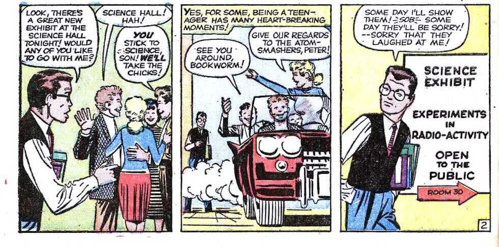
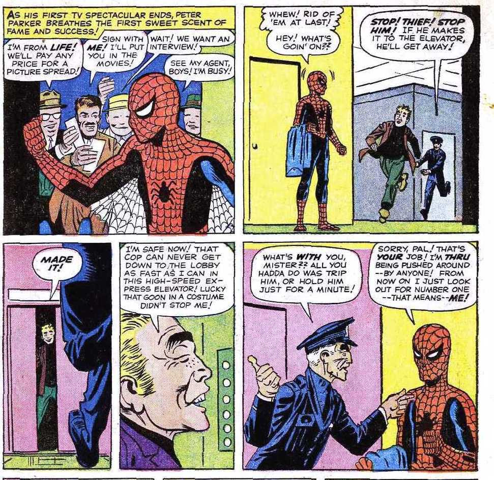

The First Issue
The friendly neighborhood/Web swing/Crime fight Spider-Man wasn't always Spider-Man. Duh.
He was once an ordinary guy, some would say loser, Peter Parker. However, he isn't the Peter Parker everyone knows and loves now.
He was an angry guy, mad at the people who bullied him, and ignored him. He hated feeling weak and powerless. The Peters we see today in modern movies, hardly resemble the Peter Stan Lee and Steve Ditko first created.
To the loving fans of the Spider-Man comics, Peter wasn't as very lovable guy in the first couple of pages.

He was a jerk to Uncle Ben and Aunt May.
That is why when he gained his powers from the bite, it was hard to feel as if he deserved them.
He didn't want to use his powers to help. He wanted to feel stronger, and prove to those who looked down on him wrong. He didn't help police stop a theif. He said "That's your job! I'm thru being pushed around ... by anyone!" He then joined a wrestling organization to show off his strength and gain money.

In the movies we have today, I don't believe any of them show the selfishness Peter had for his powers before Uncle Bens Death. He was ready to take whatever he wanted with his newly found abilities. Then, He found out Uncle Ben was shot and the police have cornered the shooter in a factory. Peter suits up and heads to comfront him, he was ready to beat he life out of him. After realizing it was the guy he didn't help catch, his mentality and character shift.
The final panel of his first apperance is so powerful. We see a defeated Spider-Man unmasked walking into the night. The famous line acredited to Uncle Ben, in a narrative box above his head. A lesson he will never forget. "With great power comes great responsiblity."
What made this Comic amazing?
Well let me hit some main points
- He was not likeable at first. Making his redemtion that much sweeter.
- He could relate to everyone being picked on and made fun off. He did what most of us would have done with new powers. It was understandable for him to use them for his own wants.
- The story was not elaborate. By the end of the issue, you were more connected to the story that was unfolding in Peter's live, than the fact that he was bitten by a spider and gained powers.
Other Medias
In movies, the origin of Peter Parker has changed immensely. Yes, some directors still grab pieces from the first apperence, but there is just always something off.
For example, in Sam Raimi's Spider-Man, he showed how he got picked on in school. However, he was not really angry, he was just passive about everything. He even recreated the wrestling match in his own style.
Then we have The Amazing Spider-Man directed by Marc Webb. There is a lot you can say about this movie in general. But we won't get into all those details. The feel of this Peter from the beginning was way off to me. Andrew Garfield was not Peter Parker to me. He acted more prideful than angry. He made Peter to much of a romance character.